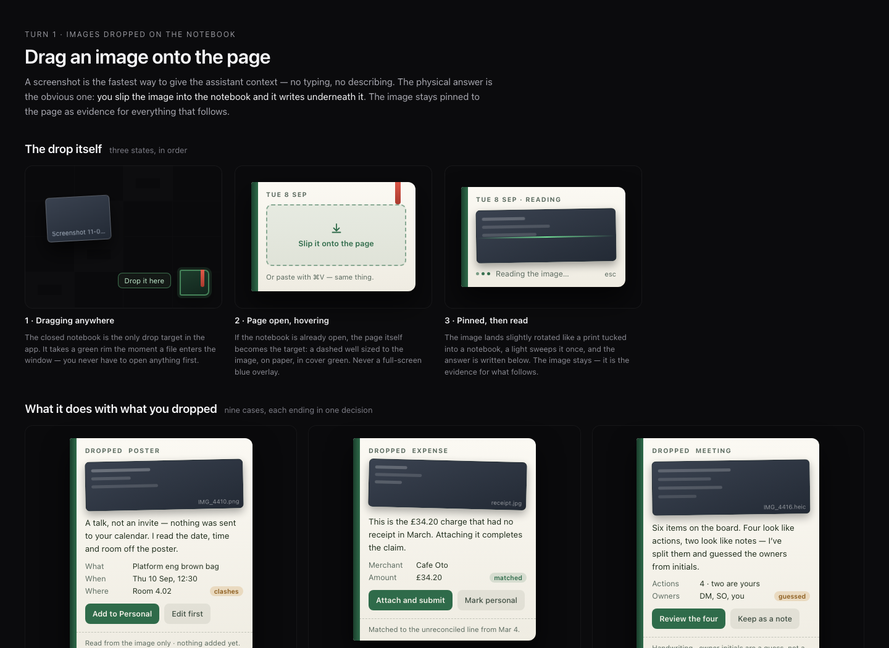
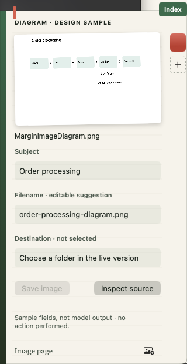
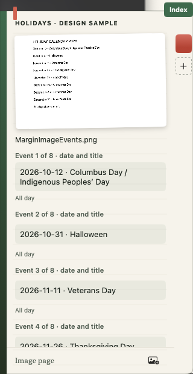
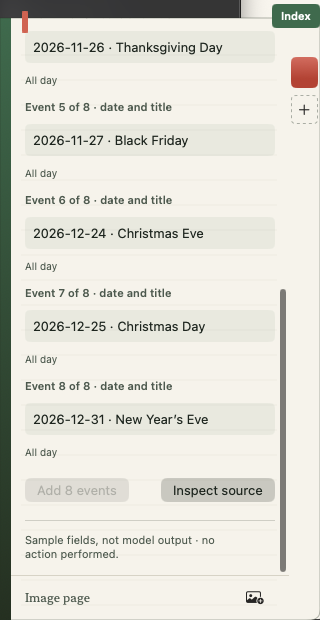

Margin image UI — review and adoption plan
Reviewed 13 September 2026 · Draft for implementation · No app changes in this review
Recommendation
Adopt the image-drop interaction and page composition as Margin’s visual direction. The strongest part is the source image pinned above editable extracted fields, followed by a concrete action and a short evidence line. Keep the paper, green spine, restrained thumbnail tilt, dashed drop well and quiet reading sheen. This is a good fit for the notebook you have been building.
Treat the archive as a visual specification with illustrative outcomes. It is not an implemented image workflow or a reliable inventory of shipped capabilities. Start with diagram → suggested filename → approved folder → save, and poster/invite → reviewed calendar draft. These connect directly to your original request and existing file/calendar work. Expense submission should come later, after an actual expense integration exists.
What I inspected
All four files in Margin_MeetingIntro.zip: Use cases.md and the three HTML exports. Rendered all three HTML documents in isolated Chrome at 1440 × 1050 and inspected their sections, including all 19 image-drop cases. The HTML uses illustrative image placeholders and styled elements, not a working uploader; all three rendered documents contain zero native button elements. Appearance and copy were reviewable, but real drag handling, keyboard operation and model extraction were not demonstrated by these exports.
Compared the design with current MarginPageView, MarginHistory, MarginAgent, OllamaToolClient, FileReadTools, FileWriteTools, FilePreviewExtractor, WebResearchTool and BatchCalendarTools. This was source review and browser rendering, not a fresh model evaluation or training-status check.

Supplied reference, rendered for this review. These are illustrative states, not a working uploader.Keep these UI decisions
| Element | Why it works | Production adaptation |
|---|
| Closed-cover drop target | No need to open a chat or find an upload button. | Show a valid-drop rim only while a supported image is over the notebook. Keep the target stable as the cover opens. |
| Dashed well on the open page | The page itself receives the source; there is no detached upload dialog. | Keep the user’s existing question visible and explicitly show whether the drop starts a new page or attaches to this one. |
| Pinned thumbnail | Lets the user compare the result with its evidence. | Real aspect ratio, small decorative tilt only, click to inspect an unrotated larger image. Never crop away relevant content. |
| Label/value rows | Dates, totals, names and destinations are easier to check than a paragraph. | Inline correction, keyboard traversal and per-field source evidence. |
| Local uncertainty tags | “Room: B2? B7?” is more useful than an overall confidence score. | Distinguish unreadable, inferred, corrected by you and extracted. Do not invent calibrated confidence percentages. |
| Two short actions | Makes the next step clear. | Two primary decisions, with expandable review for details. Name the actual effect: Save image, Review 4 tasks, Add 8 events. |
| Dashed evidence footer | Coverage belongs beside the result. | Generate it from actual runtime facts: images read, fields missing, destination and network use. |
| Ambiguous and unreadable pages | Failure is part of the experience, not a toast that disappears. | Preserve the image and draft; offer correction, retry, replacement or cancellation. |
Critical UI changes before shipping
1. Use real images before approving the layout. The placeholders hide the hardest cases: a tall receipt, a dense screenshot, transparent diagram, rotated HEIC and tiny handwritten labels. Test each inside the actual 320-point notebook, with the 12-colour ribbon rail and Index visible. That rail reduces the available content width relative to these standalone cards.
2. Add inspection and correction affordances. The lovely thumbnail is too small to audit small print. A larger source view should retain the selected field and highlight its evidence when available. Keep uncertain handwriting uncertain; shape recognition does not make a sketch a validated specification.
3. Fix actions that hide consequences. “Handle the four,” “Fix all three,” “Do it” and “Use what you got” omit the objects and operations being approved. A batch summary must expand to every target, with clear exclusions and failures. “Rename all 141” directly contradicts “118 named confidently · 23 left alone”; it must say “Rename 118” and enumerate those 118.
4. Make hit targets and keyboard behavior real. The reference’s compact action pills look shorter than its own 44-point target requirement. Preserve their visual size if desired, but provide generous hit areas. Implement genuine accessible controls, visible focus, VoiceOver labels, keyboard image import and paste. Do not rely only on a 44 × 38 cover as the discoverable import route.
5. Separate saved-page colours from status. Preserve all 12 user-selected ribbon colours. Those colours label saved pages; they must never turn red/amber/green because a job changed state. Put reading activity on the sheen, and use text/icon status beside the result. The reference’s pulsing rim and animated amber ribbon should not become permanent attention demands.
6. Make motion follow actual work. A single settling tilt and brief sheen are enough. The written 1.5-second sequence cannot promise a model answer at 760 ms. Use actual states and elapsed time; respect Reduce Motion. Inactivity must not close a page while a drag, edit, review or extraction is active. Escape cancels reading safely; after a provider write begins, it cannot promise to reverse an already completed effect.
7. Edit the voice. “A retake would take you five seconds; guessing would cost you more” is unnecessarily scolding. Prefer “I can read the total, but not the date or merchant. Replace the image or enter those two fields.” Do not dismiss a dog picture as irrelevant: the user may want it named, saved or described. Ask what they want when no task is specified.
Product and safety corrections
| Reference behavior | Critical issue | Adopt instead |
|---|
| Saved screenshot opens a page with live actions | Conflicts with the archive’s explicit inert-receipt rule. | Open the saved receipt. “Use as a new request” creates a fresh, revalidated proposal. |
| Business card saved automatically | New Contacts authority; the reference even says “Saved” before offering “Just save it.” | Review the contact and destination before creating it. No automatic exception. |
| Receipt “Attach and submit” | No demonstrated expense provider, submission authority or transaction match. Equal amounts alone do not prove a match. | Extract merchant/date/amount/currency; offer a reviewed filename and folder. Submission remains a later integration. |
| Drop onto a job clears a step | Pixels are evidence, not provider confirmation; spatial placement is easy to misinterpret. | Show “Attach to this job?” and verify provider state before marking a step complete. |
| Identical OCR text means duplicates | Different charts, annotations or signatures can contain identical text. | Similarity candidates with side-by-side review. Use exact byte hashes only for exact duplicates. |
| Newer image wins a conflict | File modification time is not the event’s authority or revision date. | Show both values and their sources; ask, or verify against the actual provider. |
| Every act has one-hour undo | Calendar sends/cancellations and multi-provider changes may not support exact rollback. | Show the real undo/compensation capability per action; retain partial outcomes and recovery instructions. |
| Medical image automatically “not logged” | Classification can miss sensitive content; history, thumbnails and learned memory can still retain it. | Explicit private-page mode, no automatic memory learning from images, and enforced storage/telemetry policy before claiming privacy. |
| Secret detection before any upload | A remote model cannot first inspect an image without receiving it. Detection is not a guarantee. | Local multimodal reading first; no silent remote fallback. Preview outbound research terms; redaction needs its own tested implementation. |
| “Delete it now” | Ambiguous between the page, imported copy and original file. | “Remove from page” for attachments; “Move original to Trash” is a separate confirmed file operation. |
| Read whole legal page; rest is boilerplate | Visually plausible extraction can omit material terms. | State the requested scope and unread/omitted areas; retain source inspection and avoid declaring unreviewed content irrelevant. |
Reality check against current Margin
| Capability | What exists | What is still required |
|---|
| Search text inside existing images | FilePreviewExtractor uses Apple Vision OCR; find_files_by_content scans a bounded candidate set (cap 120). | Not a persistent image index or whole-library search. Add indexing separately if needed. |
| Model reads a dropped image | Current page drop handlers accept text for bookmarks; request flow is text oriented. | Image ingestion, attachment state and a verified multimodal inference path. Follow your requirement: the model reads the pixels; do not substitute Apple OCR for this flow. |
| Rename from meaning | rename_files supports closed naming patterns. | A per-file proposed-name map, validation, collision handling and exact undo. Existing patterns do not establish semantic naming. |
| Image → CSV/note | No corresponding export tool in the inspected registry. | Structured extraction, encoding/formula handling, file preview and bounded write/undo. |
| Image → event | Calendar tools and batch proposals exist. | Complete image extraction, field correction and explicit mapping into those tools. |
| Image → calendar/recording association | Calendar and recording reads exist. | Timestamp provenance, timezone handling, ambiguity and actual transcript offsets. Matching timestamps is a hypothesis, not identity. |
| Image → web research | Brave excerpt research exists. | Approved public query derived from the image, with accurate payload disclosure. |
| Saved image pages | MarginHistory stores text receipts and bookmark metadata. | Versioned attachment references, lifecycle/retention rules and migration. |
| Memory and notebook-only settings | Settings and memory controls exist outside the notebook. | Move frequent controls onto pages gradually; retain host-level activation, downloads and permissions in Settings. Do not undo the new Margin activation destination merely to enforce the reference’s “only surface” rule. |
Proposed interaction contract
Idle → valid drag hover → attachment staged → reading → extracted fields → review → applying → receipt. Unreadable, needs clarification, cancelled and partial failure are explicit branches. Dropping alone can start local reading; it cannot create an event, move a file or submit anything.
A dropped file grants access to that item for the task, not its parent folder. A save destination must be a granted folder or chosen through the system picker. Copied/imported attachments are distinct from originals. Repeated drops should not silently replace an image; show separate attachments or offer to reuse the existing one. Start with a proposed batch limit of five, reported before reading; tune byte/pixel limits with memory tests rather than silently resizing away evidence.
Keep the existing request when images arrive. If a job is busy, stage a clearly labelled new page or offer an explicit attachment choice; never append silently to whatever the model is currently processing. Unsupported/corrupt files get a local explanation without changing the current page. Pasting an image follows the same route as dropping it; pasting text remains text.
Implementation sequence and gates
| Phase | Work | Observable completion gate |
|---|
| 1 · Visual prototype | Build native hover, pinned image, larger inspection, field rows, busy/error/ambiguous states and keyboard import using fixture data. | Real receipt, diagram, screenshot and HEIC remain readable at 320 points; ribbons do not overlap; focus and Reduce Motion work. Prototype states are labelled, never presented as model output. |
| 2 · Attachment foundation | Add versioned attachment records and bounded local staging; track original vs imported copy, orientation, image dimensions and lifecycle. | Multi-drop, paste, cancellation, unsupported files, duplicate drops, restart, missing originals and retention pass without losing a draft or altering originals. |
| 3 · Multimodal reading | Connect a separately verified vision-capable model adapter. Produce structured fields with source references and inferred/unclear flags. Keep Pilot 1 as the text action planner only if the selected architecture needs it. | Held-out native-image evals establish readable extraction and no-image behavior; no hidden OCR fallback. Benchmark peak memory and latency on the intended 16 GB Mac with realistic app load. Training loss alone cannot pass this gate. |
| 4 · First complete flows | Diagram → name → folder → save; invite/poster → corrected event draft → confirmation. Add receipt extraction → save, without expense submission. | Every write matches its preview, missing dates/years require clarification, repeated confirmation is idempotent, collision-safe saves preserve originals and undo is verified. |
| 5 · Batch and history | Up to five attachments, per-item review, partial execution receipts, saved-image pages and existing 12-colour bookmarks. | No omitted item, no false all-done result, no live actions restored from history, safe restart after interrupted writes. |
| 6 · Broader cases | Whiteboard tasks, table export, original-document search, reviewed web queries and optional indexing/time association. | Each workflow has its own registered tool support and categorized evals. No blanket “built” label from constituent tools. |
| Later · New authority | Contacts, expense submission, email, travel cascades and external jobs. | Separate provider design and explicit product approval; not implied by approving the image UI. |
Do not re-train or choose a new default model just to implement Phase 1. The UI and attachment foundation can advance while the vision candidates are evaluated. Keep GPU runs sequential under the existing workstation arrangement; this review starts no training or inference jobs.
Evaluation and release checklist
Create a timestamped developer HTML report grouped by: import/lifecycle; visual/accessibility; extraction; ambiguity; tool planning; execution/recovery; privacy/injection; history; performance. Keep runtime failures separate from model failures. Report the case count, model/checkpoint, runtime, fixture revision, pass/fail/invalid/not-run, per-category outcomes, median/p95 latency and peak memory.
Include held-out variants of all 19 image-drop cases. Prioritize the eight-holiday screenshot, named diagram saved to a granted folder, ambiguous date format, absent year, unreadable handwriting, same total/different receipt, duplicate text/different chart, screenshot prompt injection, changed original after preview, grant revoked before save, partial batch, and screenshot of an old Margin action. Measure dates/amounts/filenames and complete object counts, not only tool routing.
Proposed release gate: no unconfirmed writes, no scope escapes, no unintended image upload, no false completion after partial failure, and no execution from a saved receipt across the release fixture set. This is a tested boundary, not a claim of universal safety. Report accuracy and uncertainty separately; a confident wrong field must not count as a successful read.
First-, second- and third-order effects
First: drag and drop reduces typing and makes the notebook more tangible. Users can inspect the source beside the proposed task.
Second: retained images increase storage, privacy exposure and context size; multiple sources create ambiguity; additional actions need better previews. Attachment lifecycle, bounded queues and field evidence become core infrastructure.
Third: a polished page can make uncertain extraction look authoritative. Margin will become a trusted archive of evidence and completed work, so truthful receipts, stable provenance and honest recovery matter more than animation. Preserve the design’s warmth, but derive its claims from actual state.
Recommended next step
Build Phase 1 against real fixture images, with the diagram-save and holiday-event flows as the two reference pages. Approve the native interaction and evidence layout before attaching live inference or file writes. Preserve the reference’s visual language, the existing notebook Index and all 12 ribbon colours.
Phase 1 implementation · 13 September 2026
Installed local build 202609130301 on the margin branch. Open the image button beside the writing line or press Command-Shift-I while the notebook is open. Example pages contains the diagram and eight-holiday fixtures. Drop/import and image paste use the same in-memory preview store. No vision inference, OCR, history persistence, provider writes or original-file modifications are performed by this prototype.
Implemented: closed/open image-drop handlers and hover feedback; visible image entry; file picker; paste support; up to five images; bounded decoding with orientation correction; real pinned thumbnails; unrotated inspection with zoom; editable diagram and all eight holiday fields; explicitly simulated reading, ambiguous and unreadable states; preserved notebook draft; separate existing ribbon rail; inactivity protection while the preview is active.
Passed checks: real diagram import and decode, corrupt input preserves existing attachments, batch/total count limits, reset, asynchronous file-provider loading, and cancellation preventing late callbacks from restoring a cleared attachment. Signed Release build passed. Native checks exercised Command-Shift-I, both bundled examples, source inspection/zoom controls and editing a holiday field. Screenshots captured at the native 320-point width. Test edits were restored.
Remaining Phase 1 verification: physical Finder drag across closed/open cover, clipboard image paste through the native responder chain, HEIC/tall-receipt rendering, VoiceOver and Reduce Motion exercises. These are not implied by the importer unit checks. Phase 2 persistent attachment lifecycle and Phase 3 live multimodal reading remain unimplemented. The on-page preview label is deliberate; fixture fields must never be presented as extracted facts.
Image import and saved pages · follow-through
Native checks now exercised actual Finder mouse drags: PNG into the open notebook and HEIC onto the closed cover, which opened with the image pinned. Command-V initially failed through the responder chain; the notebook now handles image paste at its panel event boundary while leaving ordinary text paste alone. A retest passed with a labelled tall-receipt fixture, and the clipboard was restored without logging its contents.
Explicitly keeping an image page now writes a versioned local snapshot containing image data, fields and the request, referenced by an inert history entry. All 12 ribbon colours are available. The saved cyan test page survived an app restart and reopened without executing anything. The temporary saved test and its owned copy were removed afterwards; all 14 pre-existing history entries were preserved.
Kept pages survive normal retention while bookmarked. Once unmarked, they follow the configured history retention. Expired entries and clearing history remove only the owned image copies. “Forget saved copy” removes one saved image page without clearing other history or changing original files. Edits require keeping the page again; unsaved previews are still memory-only. Snapshot storage is bounded to 600 MB total, with 25 MB per imported image, five images per page and 50 megapixels per image. Files are owner-readable/writable and the owned image directory is owner-only.
Tests cover real decode, corrupt input, batch limits, reset, asynchronous file-provider loading, cancelled callbacks, saved reload, ribbon colour, corrupt restore without draft loss, replacement cleanup, forgetting one saved page, retention cleanup and original preservation. Native checks cover source inspection controls, editable fields, all eight holiday entries, PNG/HEIC drag, tall-image paste and saved reopening after restart.
Accessibility remains a limited result: the image control exposes an AXButton role and descriptive inspection help; full spoken VoiceOver navigation is not verified. System-level Reduce Motion behavior is also not yet exercised. The layout code disables its tilt and animated sweep when Reduce Motion is supplied, but that source observation is not a completed native test.
Live vision, image-derived action execution and automatic draft persistence are still not connected. The reference fixtures remain labelled design previews. The next implementation stage is a verified vision model producing real structured fields; no model inference or workstation GPU runs were started by this work.
Image page correction · 13 September 2026
The consumer image page now follows the supplied reference composition: a pinned source, editable fields for design samples, at most two task actions and a short evidence footer. Preview-state and example pickers, Paste, Keep and Back buttons have been removed from the page. Image imports use drag/drop, Command-V or the small image icon. The source context menu offers Add and Remove. Index remains available, and keeping an image page uses the existing 12-colour ribbon rail.
Design examples are available only when launched with MARGIN_IMAGE_UI_DEVELOPER=1, through the spine context menu. Sample fields are explicitly labelled and the future Save image / Add 8 events actions stay disabled. No live vision or image-derived writes are claimed.
Image import/persistence checks and the 12-colour bookmark checks passed. Signed build 202609130738 installed successfully. Native diagram and all eight holiday fields were inspected, including the final actions and footer. Command-K opens Index from the image page and returns to the same image. No test pages were saved to user history.
Corrected native image pages
Build 202609130738 · 13 September 2026. Developer design samples; no model output or calendar writes.

Diagram: source, editable fields and two actions
Eight holidays: first fields
Eight holidays: remaining fields and action footer